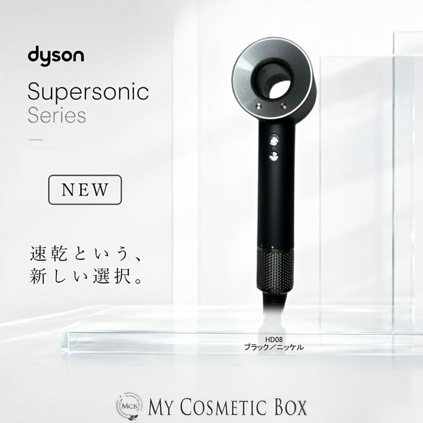
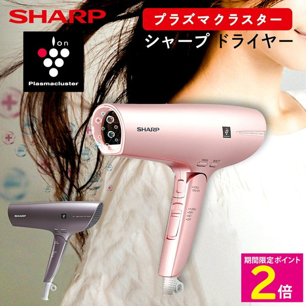
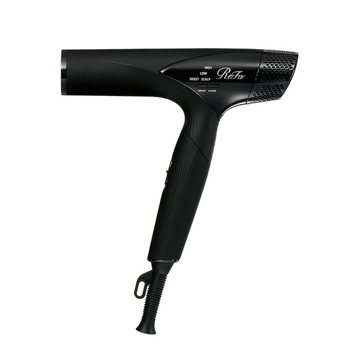
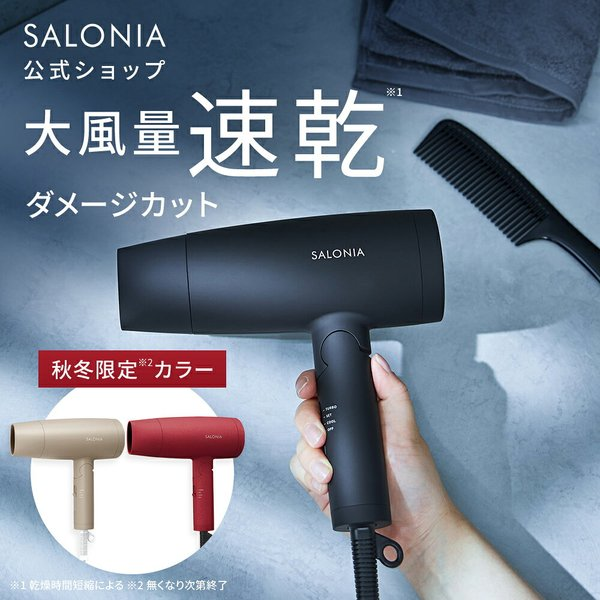
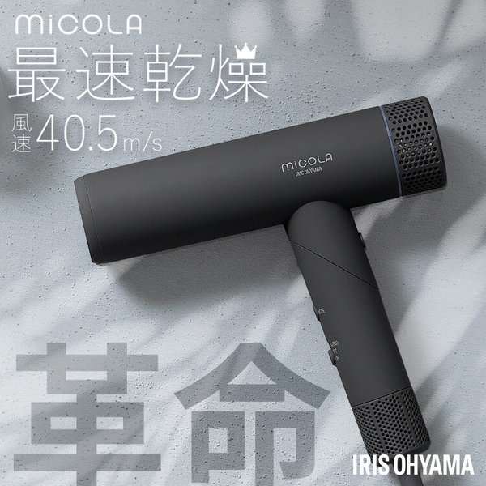
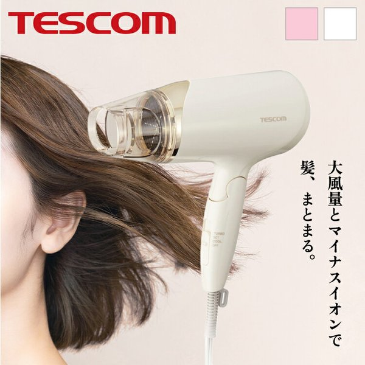
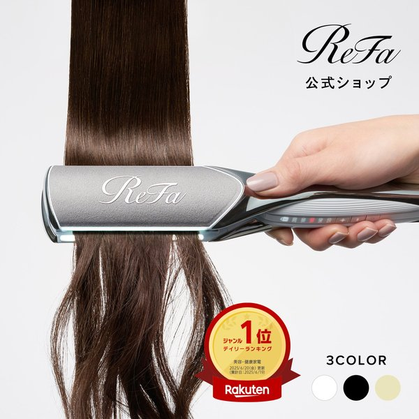
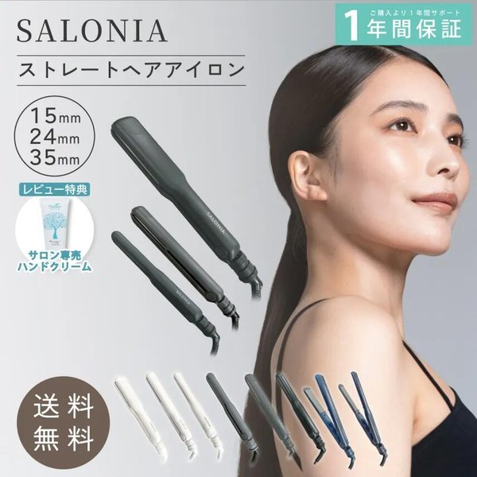
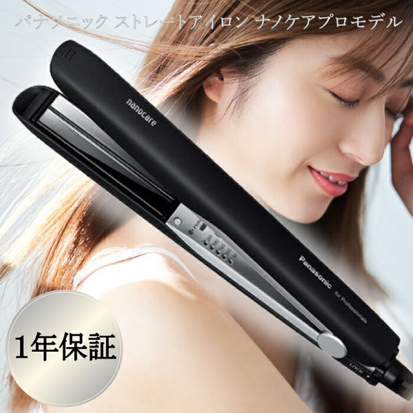

【2026年最新】乾かす時間を短く、髪はツヤに。速乾ドライヤー＆ヘアアイロンおすすめ10選
毎朝のブローにどれだけ時間をかけていますか。ドライヤーを変えるだけで乾くまでの時間が数分短くなり、髪のパサつきも落ち着くなら、毎日のことだけに効果は大きいものです。
選び方の軸は3つ。風量（速乾性）、温度コントロール（ダメージ対策）、そして持ちやすさです。高価なモデルほど風量と温度制御が優秀で、結果的に朝の時間と髪の状態が両方よくなります。
本記事では、楽天市場で人気・高評価の速乾ドライヤー＆ヘアアイロン10選を、実売価格とレビュー評価つきで写真付き紹介します。
- おすすめ10選 スペック・特徴比較表
- BEST 1｜ヘアドライヤー ナノケア EH-NA0K（2025年度モデル）
- BEST 2｜ヘアドライヤー Supersonic Nural Shine HD08
- BEST 3｜ヘアドライヤー IB-NP9 プラズマクラスター搭載
- BEST 4｜ビューテック ドライヤー スマート
- BEST 5｜スピーディー イオンドライヤー
- BEST 6｜大風量ヘアドライヤー MiCOLA 1,200W
- BEST 7｜マイナスイオンヘアドライヤー TD260A
- BEST 8｜パワーストレートアイロン プロ
- BEST 9｜ストレートヘアアイロン 24mm
- BEST 10｜ストレートアイロン ナノケア EH-HS0EK
- 【読者負担0円】買わなくても得する無料サービス
- まとめ：ドライヤー・ヘアアイロン10選の選び方
| 順位 | 商品名 | ブランド | 最大の特徴・おすすめ理由 | 総合評価 |
|---|---|---|---|---|
| BEST 1 | ヘアドライヤー ナノケア EH-NA0K（2025年度モデル） | パナソニック | 高浸透ナノイーで髪がまとまる | 4.69 |
| BEST 2 | ヘアドライヤー Supersonic Nural Shine HD08 | ダイソン（Dyson） | 独自モーターの強い風で速乾 | 4.67 |
| BEST 3 | ヘアドライヤー IB-NP9 プラズマクラスター搭載 | シャープ（SHARP） | プラズマクラスター搭載 | 4.60 |
| BEST 4 | ビューテック ドライヤー スマート | ReFa（リファ） | 水分センサーで温度を自動制御 | 4.63 |
| BEST 5 | スピーディー イオンドライヤー | SALONIA（サロニア） | 5,000円台のコスパ | 4.19 |
| BEST 6 | 大風量ヘアドライヤー MiCOLA 1,200W | アイリスオーヤマ | 軽量で長時間持っても疲れにくい | 4.55 |
| BEST 7 | マイナスイオンヘアドライヤー TD260A | テスコム（TESCOM） | 3,000円台の手頃さ | 4.45 |
| BEST 8 | パワーストレートアイロン プロ | ReFa（リファ） | 幅広プレートで時短になる | 4.71 |
| BEST 9 | ストレートヘアアイロン 24mm | SALONIA（サロニア） | プレート幅を選べる | 4.65 |
| BEST 10 | ストレートアイロン ナノケア EH-HS0EK | パナソニック | ナノイーでしっとり質感 | 4.59 |
ヘアドライヤー ナノケア EH-NA0K（2025年度モデル）

高浸透ナノイーで髪の内側までうるおいを届ける、パナソニックのハイエンドドライヤー。大風量で素早く乾かしながら、温風と冷風を交互に当てるモードでツヤとまとまりを出せます。乾かす時間を短くしたい人ほど効果を実感しやすい一台です。 楽天市場での実売価格は約34,967円（2026年11月時点）。
- 高浸透ナノイーで髪がまとまる
- 大風量で乾くのが早い
- 温冷の自動切替でツヤ仕上げ
- 本体価格が3万円台と高め
ヘアドライヤー Supersonic Nural Shine HD08

独自の高速デジタルモーターで、軽い本体からパワフルな風を出すダイソンのドライヤー。頭皮に近づけると温度を自動で下げるセンサーを備え、熱ダメージを抑えながら乾かせます。風の強さと軽さを優先したい人に向いています。 楽天市場での実売価格は約33,000円（2026年11月時点）。
- 独自モーターの強い風で速乾
- 頭皮センサーで温度を自動調整
- 磁気式でアタッチメント交換が簡単
- 本体価格が3万円台と高額
ヘアドライヤー IB-NP9 プラズマクラスター搭載

プラズマクラスターを搭載したシャープの大風量ドライヤー。乾かしながら静電気や髪のパサつきを抑えたい人に向いています。プラズマクラスター搭載機としては手の届きやすい価格帯なのがうれしいところ。 楽天市場での実売価格は約11,000円（2026年11月時点）。
- プラズマクラスター搭載
- 大風量でブローが時短に
- 1万円台で買える価格設定
- 上位機種に比べると機能はシンプル
ビューテック ドライヤー スマート

髪の水分量をセンサーで感知し、温度を自動でコントロールする「プロセッシングドライヤー」。乾かしすぎを防いで、うるおいを残したまま仕上げられます。折りたためるコンパクト設計で、旅行や出張にも持っていけます。 楽天市場での実売価格は約38,000円（2026年11月時点）。
- 水分センサーで温度を自動制御
- 折りたたみ式で持ち運びやすい
- 海外でも使える電圧対応
- 価格は4万円近くと高額
スピーディー イオンドライヤー

累計400万台突破のロングセラー。大風量で速く乾かせ、マイナスイオンで静電気とパサつきを抑えます。5,000円台で買えるので、はじめてのドライヤー買い替えやサブ機にちょうどいい価格帯です。 楽天市場での実売価格は約5,918円（2026年11月時点）。
- 5,000円台のコスパ
- 大風量で速乾
- 30日間の全額返金保証つき
- 上位機種より風温の調整幅は狭い
大風量ヘアドライヤー MiCOLA 1,200W

1,200Wの大風量と軽量ボディを両立したコンパクトドライヤー。折りたたんで収納でき、旅行用のセカンド機としても使えます。低温モードを備え、乾かしすぎを避けたい人にも向いています。
- 軽量で長時間持っても疲れにくい
- 折りたたみ式で収納・持ち運びに便利
- 低温モードで髪にやさしい
- 価格はセット内容や販売店によって変わる
マイナスイオンヘアドライヤー TD260A

3,000円台で買える定番のマイナスイオンドライヤー。大きな風量は出ませんが、必要十分な風と軽さで、毎日気軽に使えます。まずは手頃な価格で一本揃えたい人に向いています。 楽天市場での実売価格は約3,780円（2026年11月時点）。
- 3,000円台の手頃さ
- 軽くて扱いやすい
- レビュー数が多く定番
- 速乾性は上位機種に及ばない
パワーストレートアイロン プロ

幅広プレートで一度に多くの毛量を挟めるストレートアイロン。ムラになりにくく、朝のスタイリングが短時間で終わります。うねりや広がりが気になる髪を、しっとりした質感に整えたい人に向いています。 楽天市場での実売価格は約33,000円（2026年11月時点）。
- 幅広プレートで時短になる
- ムラなくストレートに伸ばせる
- 海外対応で旅行にも持てる
- 本体価格が3万円台と高め
ストレートヘアアイロン 24mm

15mm・24mm・35mmからプレート幅を選べるサロニアのストレートアイロン。24mmは前髪から毛先まで使いやすく、はじめてのヘアアイロンにも向きます。ケース付きで収納もそのまま。 楽天市場での実売価格は約3,597円（2026年11月時点）。
- プレート幅を選べる
- ケース付きで収納しやすい
- 3,500円台で始めやすい
- 温度キープは上位機種に劣る
ストレートアイロン ナノケア EH-HS0EK

ナノイーで髪の水分を保ちながらストレートに整えるパナソニックのアイロン。高温で一気に伸ばすのではなく、しっとり質感を残せるのが特長です。傷みが気になる髪を毎日整えたい人に向いています。 楽天市場での実売価格は約16,480円（2026年11月時点）。
- ナノイーでしっとり質感
- 立ち上がりが速い
- 海外対応の電源
- 本体価格は1万6千円台
この記事の商品を買う前に、まずは無料で得する選択肢をチェック。どれも登録・利用は0円で、無料期間中に解約すれば料金はかかりません。読みたい雑誌がある人、ポイントを貯めたい人、アンケートなら気軽という人、それぞれに合うものを選べます。
初回31日無料・無料期間中に解約すれば0円 → 楽天ポイントモール｜登録無料で毎日ポイ活
買い物なしでもポイントが貯まる無料サービス → 楽天インサイト｜アンケートに答えてポイント
登録無料・すきま時間のアンケートで貯まる → 楽天カード｜年会費永年無料
新規発行・年会費ずっと0円 →
4つのサービスの違いと使い分けは「出費0円で得する！買わずにポイントが貯まる無料サービス厳選4選」でまとめています。
💡 まとめ：ドライヤー・ヘアアイロン10選の選び方
ドライヤーは毎日使うものだからこそ、風量と温度制御に投資する価値があります。まずは予算に合わせて1台選び、朝の時間が足りないと感じたら大風量モデルへ。ヘアアイロンはプレート幅を使い方に合わせて選ぶと、スタイリングの時短につながります。
楽天市場では「5と0のつく日」や「お買い物マラソン」などのキャンペーンに合わせて購入すると、ポイント還元が最大化してお得に手に入ります。ぜひチェックしてみてくださいね。